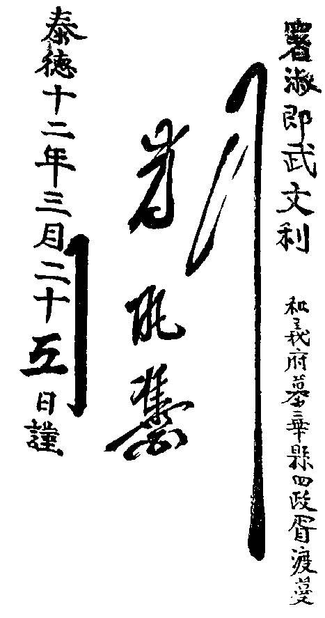

Kể từ Thế Kỷ XVI, bọn lái buôn và truyền giáo người xứ Bồ Đào Nha và Tây Ban Nha, đã từng lui tới các ven biển Đông Dương. Sau đó thì có những người Hà Lan, Anh quốc. Các Giáo Sĩ Ky-tô (Công Giáo) tới Nam Kỳ vào năm 1615. Mười năm sau, Giáo Sĩ Alexandre de Rhodes chỉ dẫn cùng họ tạo ra chữ Quốc Ngữ, lấy chữ a b c viết ra tiếng An Nam, thay thế chữ Nôm, chữ viết hiện hành thời đó, mượn chữ Hán mà viết ra thành ra ít người đọc nổi. Chẳng bao lâu về sau, ở Thành Rome có xuất bản quyển Giáo Lý bằng tiếng La-tinh và Quốc Ngữ. Lẽ cố nhiên, xin nhắc lại rằng việc phát minh chữ Quốc Ngữ sau này rất quan trọng trong việc truyền bá văn hóa Việt vào Thế Kỷ XX.
Truyền đạo và bán buôn trục lợi - cây thánh giá hội hiệp với đòn cân - ta có thể xem truyền giáo sĩ và lái buôn là những kẻ đi tiên phong trong cuộc xâm chiếm thuộc địa.
Thời ấy dân Việt Nam sống dưới ách đô hộ của hai gia tộc cường hào thù nghịch nhau, cả hai đều là gian thần Vua Lê và thường cùng nhau chinh chiến. Chúa Trịnh thống quản Bắc Kỳ (Đàng ngoài) đóng đô ở Thăng Long, Chúa Nguyễn trị vì Trung Kỳ (Đàng trong), đóng đô ở Huế.
Phía Nam lãnh thổ Việt, Quốc Vương Chàm chạy dài tới Phan Thiết (Bình Thuận), còn xuống thẳng tới Cà Mau thì có những đất phì nhiêu châu thổ tam giác sông Cửu Long là xứ người Cao Mên hay Khmer.
Từ đầu Thế Kỷ XVII, Chúa Nguyễn khởi đầu xâm chiếm xứ Chàm (tới Qui Nhơn năm 1602) rồi thôn tính toàn bộ Quốc Vương Chàm vào lối cuối thế kỷ (tới Phan Thiết năm 1897). Một tảng đá có khắc chữ Chàm ghi nhớ việc người Chàm bị người An Nam áp bức trên đường Nam Tiến: ‘’Con của người An Nam sai khiến người Chàm như sai khiến trâu. Người An Nam sai khiến rồi cười, bên họ có vua! còn người Chàm mồ côi...’’
Đồng một lượt người Việt tiếp tục xuống miền Nam, khởi đầu khẩn hoang, kinh doanh đồn điền, có lúc tiếp xúc hòa bình với người bản xứ, lúc lại tác chiến xâm chiếm đất Khmer bấy giờ rất ít dân cư. Họ chiếm Bà Rịa từ năm 1658 rồi lấy Sài Gòn, bấy giờ là Prei Nokor năm 1675 (1)
Năm 1673, Chúa Nguyễn vừa ký kết đình chiến với Chúa Trịnh, thừa nhận sông Gianh, gần lối vĩ tuyến 18, là bờ cõi phân hai lãnh địa (2).
Trong công cuộc bành trướng lãnh thổ, Chúa Nguyễn được trợ giúp: Một đạo binh người Tàu 3.000 người trên 50 chiếc thuyền chạy thoát quyền đô hộ Mãn Châu tới Đà Nẵng xin lánh nạn. Chúa Nguyễn bèn tống họ đi về phía Nam khai khẩn và chiếm đất, lúc bấy giờ Vua Khmer đã phục tùng Chúa Nguyễn. Những người lánh nạn ấy an bài ở Biên Hòa, Gia Định, Mỹ Tho, sau cùng ở Chợ Lớn; họ bán buôn, trồng tỉa và cướp giật. Họ là thủy tổ Hoa kiều ở Nam Kỳ.
Một số người Tàu di dân khác ở Quảng Đông tới lập nghiệp trong vùng Hà Tiên, đó cũng vẫn là đất Khmer, sau đó họ khuếch trương lĩnh vực của họ từ Đảo Phú Quốc tới Rạch Giá và Cà Mau. Thủ lĩnh của họ, tên phiêu bạc Mạc Cửu chịu dưới quyền đô hộ Nhà Nguyễn vào năm 1714.
Trong nhóm di dân có tín đồ hội kín ‘’phản Thanh phục Minh’’ cảm hóa người đồng cảnh ngộ, hiệp nhau tạo ra bên ngoài xã hội công khai, một trật tự xã hội kín đáo có nghi thức riêng, đây là cội rễ các phái chính trị tôn giáo có tính chất mưu toan lật đổ đương quyền - đặc biệt như Thiên Địa Hội - thù sâu chống người Âu Tây đột nhập.
Năm 1698, Nhà Nguyễn chế định Sài Gòn là đầu phủ các Tỉnh Gia Định và Đồng Nai (Biên Hòa); năm 1733, tới lượt Long Hồ (Vĩnh Long) rồi đến Định Tường (Mỹ Tho) đều bị chiếm. Năm 1754, một quan tổng trấn ngự tại Sài Gòn đặt các lãnh thổ đã chiếm theo luật Nhà Nguyễn rồi người An Nam tiếp tục thâm nhập cho tới cuối miền Nam.
Tuy nhiên các Chúa Nguyễn còn phải đương đầu cùng nhiều địch thủ mới.
Nông dân nổi dậy thường xuyên, làm rung động cả hai trào Chúa Nguyễn-Trịnh.
Có ba anh em, cả ba đều thuộc hạng sĩ phu - quê quán ở Ấp Tây Sơn (ngày nay là An Khê, Qui Nhơn), vì vậy tên gọi Tây Sơn - Nguyễn Văn Nhạc làm Biện Lại, cùng hiệp sức với hai em là Nguyễn Văn Lữ và Nguyễn Văn Huệ, nhờ‘’đoạt của nhà giàu để cứu giúp người nghèo’’ (3)mà họ chiêu tập được ít ngàn nông dân. Ba anh em chiếm Thành Qui Nhơn năm 1773, sau đó đoạt toàn Trung Kỳ và đánh đuổi Chúa Trịnh ở Bắc Kỳ.
Họ tiến thẳng tới Gia Định năm 1776 rồi hạ sát Chúa Nguyễn đang cư trú ở đó. Chỉ một mình Hoàng Tử Nguyễn Ánh, 16 tuổi được thoát thân. Rồi đây Nguyễn Ánh sẽ cầu Pháp giúp để phục hồi ngôi chúa.
Tây Sơn đang làm chủ tể toàn xứ, từ Bắc Kỳ tới Nam Kỳ.
Vừa tới Nam Kỳ năm 1767, Giám Mục Bá Đa Lộc-Pigneau de Behaine, người của Hội truyền giáo ngoại bang ở Paris, bèn ra tay cứu vớt Nguyễn Ánh lúc bấy giờ bị Tây Sơn đuổi theo, đang cùng sáu viên quan và độ trăm người tùy tùng trung thành ẩn lánh tại cù lao Phú Quốc. Giám Mục làm thầy và người chỉ dẫn cho Nguyễn Ánh.
Nguyễn Ánh trao trọn quyền thay mặt mình cho Giám Mục Bá Đa Lộc khi ông này trở về Pháp hồi tháng 12 năm 1784, để yêu cầu Vua Louis XVI trợ giúp về mặt binh bị. Giám Mục tới Paris năm 1787, chính năm thủ lĩnh Tây Sơn Nguyễn Văn Nhạc xưng đế ở miền Trung, lấy niên hiệu là Thái Đức, đóng đô tại Qui Nhơn (Bình Định), đồng thời Nhạc phong Huệ làm vua các tỉnh ở Bắc còn Lữ ngự trị các tỉnh miền Nam.
Giám Mục tâu với Vua Louis XVI:
Ông vua chính tông ở Nam Kỳ bị một kẻ soán ngôi lật đổ, ngài sai tôi (cùng đứa con một của ngài năm nay 16 tuổi) đến khẩn cầu vua nước Pháp trợ giúp. Xứ Nam Kỳ giàu có lắm và hoạt động sinh sản thật phi thường. Những vật liệu đặc dùng trong cuộc nội thương và ngoại thương là: Vàng, hạt tiêu, quế, lụa là, bông vải, màu chàm, sắt, trà, sáp ong, ngà voi, gôm nhựa cây nhũ hương, vernir, các thứ cây, chỉ thôm, gạo khô, cây để kiến trúc, v.v...Tóm lại, kiến lập một cơ sở Pháp ở Nam Kỳ sẽ là phương hướng chắc chắn của ta để trừ bì ảnh hưởng lớn lao của Anh quốc trong toàn các thuộc địa phủ Ấn Độ.
Số tiền người ta xuất ra để kiến lập, dù sao cũng là một việc bỏ vốn thâu lợi thật nhiều cho ảnh hưởng chính trị và thương mại mà nước Pháp sẽ hưởng trong thời gian ngắn ngủi tới (4).
‘’Vua Nam Kỳ’’ và Vua xứ Pháp liền ký tờ Hiệp Ước tương trợ ngày 28 tháng 11 năm 1787 ở Thành Versailles: Pháp giúp binh thì Vua Nam Kỳ phải nhượng lại cho Pháp hải cảng chính ở Hội An (Đà Nẵng), Đảo Poulo Condor-Côn Sơn Pháp làm chủ, thần dân của ‘’Đức Vua tận tâm theo Ky-tô Giáo được tự do hoàn toàn về thương mại trong các lãnh thổ của Đức Vua Nam Kỳ, trừ tuyệt toàn cả các nước Âu Châu khác. Người Pháp có thể gây dựng được những cơ sở họ xem là nhu cần cho việc hàng hải và thương mại của họ, cùng là để bồi bổ và đóng tầu’’. (5)
Thế thì Giám Mục Bá Đa Lộc là người tiên phong của giai cấp tư sản Pháp trong công cuộc xâm chiếm thuộc địa. Sự nghiệp này đã được phóng đại vào thời Đệ Nhị Đế Quốc (1852-1870) và nhất là trong thời kỳ Đệ Tam Cộng Hòa (1870...) Pháp.
Giám Mục rời xứ Pháp vào tháng chạp 17 năm 1787, chỉ được Nhà Vua hứa giúp thôi. Ông không nhận được trợ giúp chính thức chút nào, nhưng ông được những người Pháp buôn bán giầu có ở Ile de France (bây giờ là Đảo Ile de la Réunion, ở Ile de Boubon bây giờ là Đảo Ile Maurice) và ở các cơ nghiệp Pháp ở Pondicherry. Ngày 24 tháng 7 năm 1789, Giám Mục cập bến ở Vũng Tàu, cùng với bọn đánh giặc mướn, tốp lính đào ngũ hoặc bị đuổi khỏi các chiến thuyền của nhà vua và ‘’vọng tưởng phiêu lưu phù phiếm’’. Theo sau đó, nhiều chiếc tầu Pháp khác chở khí giới và đạn dược cùng cập bến.
Lúc bấy giờ, Nguyễn Ánh đã thu phục Sài Gòn, Vua Tây Sơn Nguyễn Văn Lữ đã từ trần năm 1787 rồi đạo binh của ông bị bại trận và rút lui. Cần phải chinh phục Trung Kỳ, nơi Nguyễn Văn Nhạc trị vì, và xứ Bắc Kỳ do Nguyễn Văn Huệ trấn thủ.
Quân của Nguyễn Ánh, vũ trang theo lối Âu Châu, luyện tập với những người lính Thủy Pháp đã từng trải, còn đoàn chiến thuyền của ông có chiến hạm do người Pháp chỉ huy hỗ trợ, nhờ đó mà Nguyễn Ánh thắng nổi Tây Sơn.
Nguyễn Văn Huệ bị bệnh mất năm 1792, Nguyễn Văn Nhạc qua đời năm sau đó, toàn quân trấn giữ Qui Nhơn kinh đô của Nhạc, cầm cự đến tháng 7 năm 1799 mới hàng. Cũng trong năm đó, vào tháng 10, vị Giám Mục háo chiến Bá Đa Lộc bị kiết lỵ mà từ giã cõi đời. Vương Thành Huế chỉ thất thủ năm 1801.
Thế thì phải 13 năm ròng rã mà họ Nguyễn vũ trang đầy đủ mới thắng nổi một cuộc nông dân chiến tranh.
Nguyễn Ánh thắng trận nhập thành Huế ngày 12 tháng 6 năm 1801, liền đó ra lệnh quật mồ Bắc Bình Vương Nguyễn Văn Huệ, đem thây chặt đầu và lên án lăng trì người con gái cùng 31 thân nhân gia tộc Vua Tây Sơn.(6)Ngày 20 tháng 7 năm 1802, Nguyễn Ánh chiếm lĩnh thổ Chúa Trịnh. Bấy giờ ông 40 tuổi. Năm 1806, ông xưng Hoàng Đế nước Việt Nam, lấy niên hiệu Gia Long sau khi thọ ấn tước của Hoàng Đế Trung Quốc ban cho.
Gia Long quan niệm Quốc Gia của ông - tương tự như Trung Quốc - ở miền Nam khắc phục dưới quyền chủ tể của mình, các Quốc Vương Cao Mên, Lào, Xiêm, các bộ lạc Mọi... Ông công bố hình luật - Luật Gia Long - luật cổ hủ chép theo sách Tàu, lập Văn Miếu chế định phụng Thờ Khổng Tử, mở trường học như ngày xưa để đào tạo quan chức. Nhiều trước tác bằng chữ nôm xuất hiện năm 1811, trong đó có truyện Kim Vân Kiều của Nguyễn Du (1765-1820).
Mọi sự việc ấy thực hiện giữa đám nhân dân khốn khổ vì sưu quá cao, thuế quá nặng đến đỗi vô số dân làng bỏ hoang ruộng đất của họ vì không đóng nổi thuế, không chịu nổi sưu dịch. Người ta tu bổ thành trì hoặc xây dựng thành lũy mới:
Ở đây người ta tạo lại những bước tường thành vua. Lính xây tường, dân chúng lấp vũng ao: Nhiều người bị chết vì quá mệt đuối; người ta phải làm ban ngày cho tới một phần ban đêm; còn một phần đêm lại phải canh gác; người ta vừa có chút thì giờ để ăn uống. Những sự bất công và hà lạm [thời Gia Long] còn quá hơn thời Tây Sơn.
Đấy là bức tranh miêu tả trong Chỉ giáo thơ mới (Nouvelles lettres édifiantes VIII) (7).
Thời Gia Long (1802-1819), người ta đếm tới 73 cuộc nông dân nổi loạn, 234 thời Minh Mạng (1820-1841) và 103 thời Tự Đức (1847-1883), trong đó kể cả những cuộc nổi loạn của các chủng tộc thiểu số. Những người cầm đầu là tù trưởng nông dân, sĩ phu, hoàng tộc Nhà Lê, quan lại, hương mục.
Kế vị Vua Gia Long, Vua Minh Mạng không theo lối cha mà dung túng việc truyền Đạo Thiên Chúa, Đạo này xoi bói nền tảng trật tự xã hội truyền thống theo Khổng Giáo, tức là cơ bản uy quyền nhà vua. Năm 1825, ông ra sắc lệnh lần đầu cáo giác ‘’tà đạo của người Âu Châu làm bại hoại lòng người và thuần phong mỹ tục’’. Năm 1833, ông truyền lệnh cho các quan đồ buộc tín đồ Ky-tô Giáo phải dậm đạp cây thánh giá trước mặt mình, rồi tha họ lần đó. Các quan phải quan sát kỹ nhà thờ và nhà ở của cố đạo phải hoàn toàn tiêu diệt. (8)
Từ năm 1835 đến 1838, 9 truyền giáo sĩ (Pháp và Tây Ban Nha) bị giết; cố đạo và tín đồ An Nam cũng đồng tan xương nát thịt.
Bên Tàu cấm giao dịch thuốc phiện từ năm 1729, bấy giờ chính phủ Bắc Kinh lại cấm một lần nữa, nhưng bọn Anh quốc không đếm xỉa đến vì họ thu lợi lớn trong việc bán buôn thuốc phiện. Họ thắng người Tàu trong trận giặc Nha phiến, năm 1842, họ cưỡng bách người Tàu phải nhượng Hải Cảng Hồng Kông và mở 5 hải cảng khác cho họ khuếch trương thương mại vô luân đó.

Chữ ký của Nguyễn Văn Nhạc, anh cả trong ba anh em Tây Sơn. Nguyên niên Thái Đức năm thứ 12, ngày 25 tháng ba âm lịch (1789).
Vua Thiệu Trị nối ngôi Minh Mạng, ông rất kinh khủng trước tình thế đó, sợ người Âu Tây cùng tôn giáo của họ tăng cường. Tháng 2 năm 1843, vì ông bị hăm dọa nên ông thả năm truyền giáo sĩ ra khỏi ngục rồi giao lại cho một chiến hạm Pháp. Sau khi đội chiến thuyền của ông bị Thủy Quân Pháp đánh tan ngày 15 tháng 4 năm 1847, ông bắt đầu sát phạt trở lại (ba sắc lệnh cấm đạo).
Vua Tự Đức lên ngôi nối Minh Mạng, trong một sắc lệnh công bố năm 1848, nhận định rằng:
Đạo Gia Tô là tà đạo vì trong đạo đó người ta không thờ cúng mẹ cha đã quá vãng, người ta móc con mắt những người hấp hối để làm nước thánh dùng mê hoặc lòng dân. Vì lẽ đó những người Âu Tây đầu thầy là những kẻ phạm tội trọng hơn hết, phải buộc một hòn đá nơi cổ họ rồi xô họ xuống biển. Các cố đạo An Nam thì khảo tra họ coi họ có muốn chữa lầm lỗi của họ hay không. Nếu họ chối từ thì phải xâm dấu trên mặt họ, rồi đày họ đi những chỗ rừng sâu nước độc. Còn đối với thường dân thì không nên giết chết để trừng phạt họ nữa, mà chỉ đày lưu hoặc bỏ tù thôi. Các quan chỉ nên sửa trị họ một cách nghiêm khắc thôi. (9)
Bốn nhà truyền giáo sĩ Pháp và một Giám Mục Tây Ban Nha bị chặt đầu năm 1852. Tín đồ Ky-tô Giáo không hối hận như không bị vong mạng trong tù, thì bị đầy lưu nơi độc hiểm, má trái xâm hai chữ‘’Tà đạo’’, trên má mặt tên chỗ lưu đầy.
Tự Đức trị vì vừa được mười năm. Đến cuối thời kỳ tại vị dài lâu ông đã bị thất bại và thất bại về mặt quân sự cũng như về mặt chính trị và luân lý, ông thường chống lại sự‘’mê hoặc quái gở’’ của những kẻ theo một ‘’đạo giáo vô lý dẫy đầy hoang mang’’. Ông thường dò hỏi ý kiến các quan về việc Ky-tô Giáo bành trướng, có khi ông khiển trách họ hờ hững trước tình thế ấy, khi thì nghe theo các quan đàn áp gắt gao, có lúc cũng cùng các quan lấy thái độ khoan hồng đối với Ky-tô Giáo. Năm 1869, ông ban bố các sắc lệnh khoan dung việc truyền giáo.
Tháng giêng năm 1857, nhà truyền giáo sĩ phái Lazarit tên Huc kiến nghị cùng Hoàng Đế Napoléon III ‘’thành lập cơ sở vững vàng cho ảnh hưởng Pháp ở Đông Dương’’. Ông viết cho Hoàng Đế:
Chiếm Nam Kỳ, - tức là một lãnh thổ mà Pháp có quyền chiếm không thể đối lại được (nguyên văn) - thật là dễ vô cùng. Dân chúng (theo Đạo Thiên Chúa) than vãn dưới chế đô áp chế ác ố. Dân chúng sẽ tiếp rước chúng ta như người giải thoát họ, như người ban phúc cho họ (10).
Napoléon quyết định đưa quân đi cứu Ky-tô Giáo. Về sau Đại Úy Gosselin viết ‘’ủng hộ truyền giáo sĩ chỉ là một cớ mà chúng ta dựa vào đó để đánh xứ An Nam’’.
Trong thời gian hai mươi năm, giai cấp tư sản Pháp thiết lập chủ quyền trên xứ Việt. Chúng dựa vào chính sách ngoại giao bằng súng đồng và một loạt Hiệp Ước ăn cướp, cưỡng bách vua chúa Việt. Giai cấp sĩ phu và quan lại rường cột chế độ vua chúa, thấy mình bị hăm dọa rụi tàn theo chế độ, thế nên họ kháng chiến một cách vô hy vọng chống lại bọn xâm lăng.
Trong báo New York Daily Tribune ngày 8 tháng 8 năm 1853, Karl Marx viết về việc Anh quốc áp bức Ấn Độ: ‘’Văn minh giai cấp tư sản bày chán chường tính chất giả dối sâu sắc và nguyên bản dã man trước mắt ta không che đậy, ngay từ chỗ phát sinh văn minh ấy còn mang những hình thức có thể tôn kính, cho đến các xứ thuộc địa, nơi mà văn minh ấy chường mặt giả dối và dã man không giấu giếm.’’
Ngày 11 tháng 2 năm 1859, đoàn tầu của đội quân viễn chinh vượt lên sông Sài Gòn, có Giám Mục Lefebvre và tên Thế, người An Nam tín đồ Ky-tô Giáo dẫn đường. Ngày 18 tháng 2, quân đội Pháp và Tây Ban Nha hãm Thành Sài Gòn, lực lượng trợ giúp họ gồm ‘’một toán lính tập tín đồ Ky-tô Giáo, độ sáu mươi người thường dân An Nam, cũng đồng một đạo, họ lái tàu chở người và thuốc đạn, trợ giúp khiêng người [bị thương và xác chết] và kéo những súng đồng và trái phá’’ (11)
Thơ Nam Kỳ kể lại:
Thỏa thanh nông phố thời bình,
Kỷ vì xảy thấy thình lình Tây qua;
Tai nghe tiếng súng vang xa,
Nhơn dân xao xác đặng ba đêm ngày.
Tháng giêng mùng chín mới hay,
Cần Giờ Tây lại bắn ngay pháo đài.
Nào hay tàu khói máy tài:
Chạy vào Tắc Nghĩa chẳng nài ngược ngang.
Mùng mười quân chạy lang thang,
Thất Đồn Ông Nghĩa tàu sang Tam Kỳ
Gieo neo phát pháo tức thì,
Xa Tam Kỳ bảo còn gì đỡ ngăn? (12)
Mùng 1 tháng 11 năm 1859, Hải Quân Admiral-Đô Đốc Pierre-Louis-Charles Rigault de Genouilly trao quyền lại cho Hải Quân Vise Admiral-Phó Đô Đốc Page. Ông này tả cảnh SàiGòn mà ông kế nghiệp trong một bức thư đề ngày 8 tháng 11:
Ở Sài Gòn, chỉ thấy những đống tro tàn, ta chỉ biết phá hủy và đốt nhà; dọc theo bờ sông, hàng trăm chiếc thuyền chở gạo và những món cần yếu khác đều bị thiêu hủy; dân chúng giận dữ đối với ta, họ la lên rằng chúng ta còn dã man hơn các quan [An Nam], binh lính ta thì bị bệnh hoạn mà kiệt sức và chán ghét. (13)
Thật cảnh đã cảm xúc một thi sĩ lúc bấy giờ:
Bến Nghé của tiền tan nước bọt,
Đồng Nai tranh ngói nhuộm mầu mây...
Tứ phía bủa giăng giây thép kéo,
Chân trời mù mịt khói tàu bay...
Tới Sài Gòn ngày 2 tháng chạp, Phó Đô Đốc Page thi hành các phương pháp kinh tế: Mở thương cảng cho tàu buôn để thâu vào quỹ người Pháp ‘’hàng trăm ngàn francs, trọn năm 1860, có 110 chiếc tàu Âu Châu và 140 thuyền người Tàu ghé cảng và số xuất cảng thương phẩm độ 100.000 tấn.’’
Tháng 2 năm 1861, quân tiếp viện khá đông đảo tấn công các vị trí An Nam ở Chí Hòa, mặt trận do Général de l'empereur Tự Đức-Quân Thứ Thống Đốc Đại ThầnNguyễn Tri Phương chỉ huy. Vị trí bị thất thủ, Quân Thứ Đại Thần Nguyễn Tri Phương bị thương rút về Biên Hòa cùng những người sống sót, binh Pháp tiến tới Thủ Dầu Một và Tây Ninh.
Cũng trong Thơ Nam Kỳ việc Chí Hòa thất thủ:
Dậu niên mười bốn [tháng giêng] tớ thầy gian nan,
Tảo nhìn súng nổ vang vang,
Liên thinh đại pháo dâm đàng đạn rơi
Quan quân kinh hãi chơi vơi,
Bình minh Chí mộ chi nguôi sở lòng.
Cả đêm Tây đóng giữa đồng,
Mười lăm thái tảo nước chông leo đồn
Phía sau Bà Quẹo hậu môn
Xạ liên trái khói ám hôn tối trời.
Chập tàn rạng thấy bóng người,
Hậu đồn trắng dã sáng ngời nón tây.
Các đồn vỡ chạy bức mây,
Tài hay tướng mạnh khó vầy cầm binh.
Nguyễn quang Táng lý xuất chinh,
Hậu đồn mạng một thông tình dân thương.
Nguyễn Tri [Phương] đại sứ nang đương,
Tay lâm thương đạn quân tương phục dài.
Hết người trí cả anh tài,
Vạn binh thiên tướng chạy dài hồi quê.
Mùng 1 tháng 3 năm 1861, Vua Tự Đức khuyến khích dân nổi lên, ra giá thưởng mỗi đầu người Pháp hoặc người An Nam giúp việc cho Pháp.
Tuy thế, quân đội Pháp vẫn tiến tới luôn ở Nam Kỳ: Miền Đông, Biên Hòa thất thủ ngày 17 tháng chạp năm 1861, Bà Rịa ngày 7 tháng giêng năm 1862 còn miền Tây, Thành Vĩnh Long ngày 23 tháng 3, Thành Mỹ Tho ngày 12 tháng 4, trong lúc cuộc khởi nghĩa lần lần bùng cháy khắp Nam Kỳ. Quản Cơ Trương Công Định, thủ lĩnh cuộc kháng chiến quân sự dán yết thị ngay tại Chợ Mỹ Tho tuyên cáo kêu gọi dân chúng vũ trang và ra giá đầu bọn ‘’Tây Âu dã man’’ nhưng vô ích. Khắp nơi Quân Lực Pháp-Tây Ban Nha đều thắng trận.
Hiệp Ước này thừa nhận chủ quyền của Pháp trên ba Tỉnh miền Đông Nam Kỳ: Biên Hòa, Gia Định và Định Tường (Mỹ Tho) và luôn cả Đảo Poulo Condor-Côn Sơn; Triều Đình An Nam phải trả 20 triệu francs tiền bồi thường trong thời hạn 10 năm. Triều Đình phải chuẩn y Hiệp Ước này trong thời hạn một năm, nhưng họ không làm chi cả.
Hải Quân Đề Đốc Bonard tuyên bố ngày 30 tháng 7: Từ nay ba tỉnh là tài sản tuyệt đối của Đức Hoàng Đế Pháp. Từ nay dân cư đều là con cái và là dân của Đại Hoàng Đế ấy. (14)
Qua tháng chạp, dân cư nổi loạn ở Biên Hòa tuyên bố với người Pháp:
Xứ các ông ở về biển Tây, xứ chúng tôi thuộc biển Đông. Cũng như trâu với ngựa khác nhau, chúng ta khác nhau về tiếng nói, chữ viết và cách ăn ở. Các ông có tàu chiến và súng ca-nông không ai chống nổi các ông. Nhưng ơn vua nghĩa chúa ràng buộc chúng tôi theo chân vua chúng tôi. Nếu các ông cố định đến đây để giết người cướp của đốt nhà thì trong xứ sẽ rối loạn vĩnh viễn. Chúng tôi hành động theo lẽ Trời, Trời sẽ giúp chúng tôi và rốt cuộc sự nghiệp của chúng tôi sẽ thành công. Thế thì chúng tôi nguyện thề đánh trả các ông đời đời và không ngưng. (15)
Năm 1864, độ 5.000 sĩ phu họp tại Huế vào lúc thi hội, khi họ được tin vềHiệp Ước 1862, họ khẩn cầu Hoàng Đế trừ diệt tín đồ Ky-tô Giáo này đồng lõa cùng quân xâm lăng, bằng không thì họ tẩy chay cuộc thi hội. Sĩ phu Nam Định cũng phản đối như thế. Giới trí thức giao động, triệu chứng rằng keo sơn Khổng Giáo gắn bó vua ‘’dân’’ hiện đang tan rã, văn thân sắp nổi loạn có ý nghĩa cụ thể hiện tượng tan rã ấy.
Trong quyển Cuộc Chinh Phục Đông Dương (La conquête de l'Indochine, A Thomazi viết:
Người cầm đầu quân phiến loạn, Trương Công Định bị giết ngày 20 tháng 8 năm 1864. Quân phiến loạn đóng ở miền Tây Bắc Mỹ Tho, quần tụ rất đông trong Đồng Tháp Mười, nơi đó họ xây lũy giữa đất lầy hẻo lánh, có tiếng là khó đi đến được. Họ tung ra những tờ tuyên cáo. Những ngày đầu tháng 4 năm 1865, 100 lính Pháp và 200 lính An Nam thúc giục đến Trung Tâm Tháp Mười nơi đồn trú Tổng Hành Dinh loạn quân. Lũy Đồn Tả [bị xung phong triệt hạ ngày 15 tháng 4], chứa 40 súng đồng và 350 người phòng thủ, trong đó có một người Pháp trốn lính và ăn ở theo lối người bản xứ. (16).
Trung Tâm Đồng Tháp Mười bị phá hủy nhưng bạo động vũ trang vẫn tiếp tục.
Nhiều người có tuổi hiện nay vẫn nhớ tên những tín đồ Ky-tô Giáo An Nam trợ lực quân xâm chiếm, nổi danh vì họ nhiệt tâm đàn áp: Trần Bá Lộc, Tổng Đốc Đồng Tháp Mười, y đã tham gia cuộc đánh chiếm miền Tây Nam Kỳ (Trong Đồng Tháp Mười có ngọn kinh mang tên Tổng Đốc Lộc); Đốc Phủ Trần Tử Ca, khát máu nổi tiếng ở Hóc Môn, rốt cuộc bị quân khởi nghĩa chặt đầu hồi tháng 2 năm 1885. Còn Huỳnh Công Tấn phản phúc ám sát Trương Công Định được quân Pháp phong chức Lãnh Binh. Mình cũng không thể quên được tên của một kẻ khác trợ lực quân đội Pháp, tên Đỗ Hữu Phương cũng là một tên khát máu (một con đường ở Chợ Lớn còn mang danh Tổng Đốc Phương).
Ngày 25 tháng 6, Hải Quân Đô Đốc Pierre-Paul de La Grandière (Amiral français né le 28 juin 1807 à Redon (Ille-et-Vilaine) et mort à Quimper le 25 août 1876. Chú thích TQP) tuyên bố:
Ta đã chiếm ba Tỉnh Vĩnh Long (ngày 21), Châu Đốc (ngày 22) và Hà Tiên (ngày 24), nước Pháp thống trị ba tỉnh phía Tây xứ Nam Kỳ miền dưới, thay thế cho vương triều An Nam. (17)
Ông Phan Thanh Giản,Hiệp Biện Đại Học Sĩ, Hộ Bộ Thượng Thư, sung Kinh Lược Sứ ba Tỉnh, muốn tránh đổ máu vô ích, ông tế Trời rồi tự tử ngày 1 tháng 8 năm 1867. Các con ông nổi dậy phía Nam Thành Vĩnh Long.
Trong hịch truyền ngày 9 tháng 10, Vua Tự Đức thở than:
Từ trước đến giờ không lúc nào xảy ra những bất hạnh như thời kỳ chúng ta, không bao giờ có nhiều thảm họa như năm nay. Toàn một tỉnh vì nắng hạn mà trở nên cùng khổ, xứ Bắc Kỳ bị bão tố vào mùa Hè, còn ba tỉnh Nam Kỳ thì bị mất. Trên đầu Trẫm sợ mạng Trời, ngó xuống dưới ngày đêm xót thương dân chúng: Tấm lòng Trẫm vừa run vừa sợ vừa hổ thẹn. Trẫm luôn luôn nhận lấy những điều gây nên oán hận để cho dân khỏi chịu trách nhiệm. Trẫm chưa đền tội thì những tai họa mới xuất hiện. Năm nay Trẫm tuổi chưa đến 40 mà tóc râu đã bạc, gần như một lão già, Trẫm sợ vì nỗi buồn lo thầm kín, Trẫm không còn có thể sớm hôm phụng thờ tiên tổ. (18)
Cũng trong năm ấy, quyển Lục Vân Tiên của Nguyễn Đình Chiểu (1822-1888) ra đời, do một người Pháp dịch chữ Nôm ra chữ Quốc Ngữ. Trong đó tác giả tán dương truyền thống Khổng Giáo, bài bác văn hóa Âu Tây. Thời buổi chúng tôi quyển thơ này rất phổ thông ở Nam Kỳ. Trong một quyển khác tựa là Dương Từ Hà Mậu, ông chỉ trích Đạo Phật và Đạo Hà Lan (Ky-tô Giáo) cũng đồng như ông lên án những điều ‘’dị đoan tà mị’’:
Cớ sao mình ở nước Trung,
Lòng theo nước ngoại còn mong đạo gì.
Ông bà mồ mả bỏ đi,
Gốc mình chẳng kính lại vì gốc ai?
Khói lửa bùng lên trong tam giác Cửu Long Giang: Văn quan, võ quan cùng hương chức đều nổi dậy trong một cuộc chiến đấu bất đồng lực lượng chống quân xâm chiếm và lính bản xứ tiếp lực cho Pháp. Phía kháng chiến năm 1867 thì có Đinh Sâm ở Tỉnh Cần Thơ; người Pháp sai Lộc và Tấn dẫn lính tập An Nam đến đánh Phó Đốc Binh Lê Đình Đường, ông này cùng 17 người nghĩa quân vong mạng ở Trà Vinh; Lê Văn Quan, Đề Đốc Triều và Đốc Binh Sây từ Bình Thuận vào đây, ba ông đều bị bắt trong vùng Ba Động, làng này bị quân Pháp và lính An Nam đốt rụi, nơi đó 5 thủ lĩnh khởi nghĩa bị chặt đầu, dân chúng chạy tản lạc.
Rạch Giá cũng bị chiếm trong năm ấy, nhưng vào tháng 6 năm 1868, Nguyễn Trung Trực đánh phá được đồn binh Pháp: 30 lính Pháp bị tàn sát trong đồn. Nguyễn Trung Trực bị lính của Trần Bá Lộc bắt ở Đảo Phú Quốc rồi bị chém đầu (19)
Những quan lại hương chức không đầu hàng, nổi tiếng như Huyện Toại, Phủ Câu, Đề Đốc Huân, Nguyên Soái Trần Văn Nhíp, Thiên Hộ Dương...
Chính sách thuộc địa của Đệ Tam Cộng Hòa do Jules Ferry phát biểu như thế này:
Đi xâm chiếm thuộc địa là con đẻ của chính sách phát triển kỹ nghệ.
Xuất khẩu sản vật là một yếu tố căn bản làm cho nước được giàu có, và đó cũng là phạm vi đầu tư tư bản, cũng như sự nhu yếu cho lao động. Cuộc xuất khẩu có thể đo lường tùy theo bề rộng của thị trường ở ngoại quốc (20).
Sông Cửu Long đã rõ ràng là không thể dùng làm đường buôn bán với xứ Tàu, còn nếu đi theo sông Hồng Hà mà lên đến Vân Nam thì trước hết phải được phép Triều Đình An Nam cho tàu được thông thương tự do trên dòng sông ấy. Chính vì mục đích ấy mà Thống Đốc Nam Kỳ phái Francis Garnier ra Bắc Kỳ, ở đấy bấy giờ tên lái buôn Pháp Dupuis chuyên chở khí giới trái phép quan trọng nên bị các quan làm khó.
Đấy không phải là một sứ mạng ôn hòa: Ngày 20 tháng 11 năm 1873, Francis Garnier xua 250 lính Pháp xung phong đánh Thành Hà Nội do Thống Đốc Nguyễn Tri Phương trấn thủ. Ông này trước kia chỉ huy Đồn Chí Hòa năm 1861. Ông bị thương mà chết, rồi qua tháng chạp, Garnier cũng theo ông xuống mồ, sau khi y đã đánh chiếm được miền tam giác sông Hồng nhờ trợ quân do đường biển đến.
Cuộc thương thuyết giữa Triều Đình và Pháp đã bắt đầu, bây giờ tiếp tục với Hải Quân Trung Úy Philastre, rốt cuộc hai bên ký tờ‘’Hiệp Ước hòa bình, hữu nghị và liên minh vĩnh viễn giữa nước Pháp và Vương quốc An Nam’’ tại Sài Gòn ngày 15 tháng 3 năm 1874.
Hiệp Ước này buộc Tự Đức nhìn nhận chủ quyền Pháp trên lãnh thổ Nam Kỳ, ban bố quyền tự do cho người theo Ky-tô Giáo, được thu nhận vào các cuộc thi cử và được bổ làm công chức, cùng là mở đường sông Hồng cho Pháp được giao thông buôn bán với Tàu và các Hải Cảng Qui Nhơn, Hải Phòng và Hà Nội.
Sĩ phu nổi dậy chống Triều Đình về việc chuẩn y nhượng xứ Nam Kỳ và việc hủy bỏ các sắc lệnh chống Đạo Thiên Chúa. Ngày 19 tháng 3 năm ấy, họ kêu gọi dân chúng ‘’bình Tây sát tả!’’
Loạn nổi lên khắp nơi. Ở Nghệ An và Hà Tĩnh thì có Trần Tấn, Đặng Như Mai, Trần Quang Hoan...chiêu tập ít ngàn người đồng lòng đánh phá các làng theo Đạo Thiên Chúa. Người ta nổi dậy chống việc Vua Tự Đức khuất phục người Pháp và cuộc nội chiến khởi đầu này bùng nổ tràn lan tới Quảng Bình. Vua Tự Đức thất vọng sai quân trấn áp, trong vài tháng phong trào bị đánh tan. Tới lượt những người theo Đạo Thiên Chúa trả thù đốt nhà những người ngoại đạo.
Chúng ta mất thái độ khách quan nếu chúng ta làm thinh không nhắc đến nhà văn thân theo Đạo Công Giáo Nguyễn Trường Tộ, người quê quán Nghệ An, được các truyền giáo sĩ Pháp bảo trợ, được giao du ngoại quốc và trú ngụ ở Pháp. Ông là tiền bối các sĩ phu canh tân sau này, kể từ 1863, sau khi ông từ chức phiên dịch phụng sự các Hải Quân Đô Đốc, ông dâng một loạt biểu khẩn cầu Triều Đình, kiến nghị một chương trình cải cách để hiện đại hóa xứ nhà theo con đường Âu Tây. Chẳng những ông đề nghị gửi học sinh qua Pháp để học tập kỹ thuật sinh sản, mà còn yêu cầu mở trường kỹ thuật có giáo viên người Pháp, người Anh, cần phải tập nghề cho thợ, kỹ thuật viên, mua máy móc để đóng tàu, khẩn mỏ khai rừng.
Khi ông nghe tin nước Pháp bại trận vào tháng 2 năm 1871 trong cuộc chiến tranh Đức Pháp, cùng các cuộc đảo lộn chính trị liền theo đó, Nguyễn Trường Tộ dân biểu đến thượng thư bộ binh để trình bầy ‘’Kế hoạch thu hồi sáu Tỉnh Nam Kỳ’’, trong đó điều cần yếu là về dự bị binh lực: Tìm ra tiền (vay tiền của bọn lái buôn giàu có ở Hương Cảng, vay độ 8 đến 9 triệu francs trả lại bằng hàng hóa, nhất là gỗ...) để mua ở Manille 500 con ngựa để đánh giặc, 500 khẩu súng kiểu tối tân, mướn độ 100 kỵ mã người Manille để tập luyện Việt Binh, đồng thời mua 20 khẩu ca-nông và đạn dược. Dùng ca-nông ấy, bộ binh bắn phá đồn binh địch, quân lính thủ đồn toán loạn, bấy giờ kỵ binh lẹ như chớp nhoáng tàn sát tàn quân...
Rốt lại, Nguyễn Trường Tộ đề nghị tự mình trá ra một viên quan phạm tội, Triều Đình giả đày lưu vào Nam, vào đó ông sẽ sắp đặt tổ chức những người đồng tâm để đến lúc thuận tiện thì phát động ‘’tấn công bất ngờ vào Gia Định’’; để‘’quét sạch quân thù và thu hồi sáu Tỉnh Nam Kỳ’’.
Nhưng Triều Đình vẫn nghi kỵ đối với những người theo Ky-tô Giáo, Nguyễn Trường Tộ khẩn cầu vô hiệu quả. Ông mất vào tháng 11 năm 1871, thọ 41 tuổi, chết một cách khả nghi (21)
Xứ nhà đang trải qua một cuộc khủng hoảng sâu sắc: Tiếp theo tai họa chiến tranh lại còn bão lụt, nắng hạn, mất mùa, thiếu gạo. Tháng 3 năm 1878, Triều Đình cấm xuất cảng gạo.
Hải Quân Phó Đề Đốc Lafont, Thống Đốc Nam Kỳ viết trong một tờ báo cáo đề ngày 9 tháng 4 năm 1878:
Nhiều lần tôi thử can thiệp để bỏ lệnh cấm ấy đi. Nhưng thật khốn nạn quá, các tỉnh trung ương Vương quốc đều bị nạn đói hơn một năm rồi, tai hại ấy còn lan rộng đến các tỉnh miền Nam Bắc Kỳ.
Triều Đình trả lời cho tôi rằng dân chúng đang đau khổ vì đói kém, sẽ nổi loạn chắc chắn nếu lúa gạo được phép xuất cảng, bởi vì dân chúng cho rằng họ bị khốn khổ là do biện pháp ấy, rồi họ sẽ tố cáo chính phủ muốn cho họ chết đói để làm lợi lãi cho người Âu và người Tàu. (22)
Vua Tự Đức sầu thảm mà chết ngày 17 tháng 7 năm 1883. Triều đại thực ra đã tàn rụi, vương triều còn hấp hối theo bèo bọt tháng ngày trên nửa thế kỷ.
Chúng ta trở lại tiếp câu chuyện.
Bọn hải phỉ Tàu đánh cướp thương thuyền Pháp trên sông Hồng. Người An Nam trấn giữ Thành Hà Nội đều có thái độ thụ động thế thì người Pháp ra tay trở lại: Tháng 4 năm 1882, Đại TáHenri Laurent Rivière thình lình đánh chiếm Thành Hà Nội; tháng 8 năm 1883, Đô Đốc Amédée Courbet bắn phá các đồn lũy ở Thuận An nơi cửa sông vô Huế; Triều Đình bị hăm dọa trực tiếp bèn ‘’thừa nhận và ưng thuận chịu thuộc quyền bảo hộ của nuớc Pháp’’ (Hiệp Ước Harmand ngày 25 tháng 8 năm 1883).
Tuy vậy xứ Bắc Kỳ không chịu đầu hàng, quân Pháp tiếp tục xâm chiếm trong thời Chính Phủ Jules Ferry (1883-1885). Trung Quốc đã từ bỏ quyền đô hộ xứ An Nam kể từ ngày 11 tháng 5 năm 1884, qua tháng 6, nước An Nam ký Hiệp Ước Patenôtre. Đây là lần thứ hai mà nước An Nam thừa nhận và ưng thuận chịu thuộc quyền bảo hộ của nuớc Pháp. ‘’(Từ nay về sau) nước Pháp sẽ thay mặt cho nước An Nam trong toàn cả ngoại giao. Quan chức An Nam tiếp tục cai trị trong xứ từ biên giới Nam Kỳ cho tới biên giới Ninh Bình, dưới sự kiểm soát một công sứ thay mặt chính phủ Pháp. Tất cả đồn lũy dọc theo bờ sông vô Huế sẽ phá sạch.’’
Vì bọn thắng trận muốn làm oai, rồi đây một cuộc tổng khởi nghĩa nổ bùng lên, cuộc nội chiến chống Triều Đình và chống Pháp bắt đầu tái diễn. Ngày 2 tháng 7 năm 1885, Tướng De Courcy chỉ huy đạo quân viễn chinh Bắc Kỳ, vừa tới Huế với một số đông quân lực tùy tùng để thị oai khi y trình quốc thư cho Vua Hàm Nghi (13 tuổi) để được nhìn nhận y là lãnh sự nước Pháp. Hai ông Phụ Chính Tôn Thất Thuyết và Nguyễn Văn Tường đột khởi đánh úp quân Pháp, nhưng thất bại, bèn cùng vua thoát thân, ngày 13 tháng 7, truyền hịch kêu gọi Cần Vương. Khói lửa khởi nghĩa đỏ rực Trung Kỳ, quan làng triệu tập vệ binh sở tại, lấy tầm vông vạt nhọn vũ trang nghĩa binh; những người sống còn trong Phong Trào Văn Thân chường mặt trở lại xông pha đánh phá chống những người theo Ky-tô Giáo một lần nữa. Tờ báo Người Sài Gòn (Le Saigonnais) viết:
Người ta tiếp tục tàn sát nhau ở miền Nam Trung Kỳ. Cuộc náo động lan tràn nhanh chóng như luồng thuốc súng; khẩu hiệu (Tàn sát bọn Tây bên trong rồi sau chúng ta sẽ liệu đối với Tây bên ngoài) truyền ra khắp nơi đều được thực hiện, làng xóm người Đạo Thiên Chúa đều bị xâm nhập, cướp phá, đốt rụi. Sĩ phu, quan chức mọi đẳng cấp đều tự mình đứng ra chỉ huy phong trào bạo động. (23)
Từ bấy giờ tới lúc Vua Hàm Nghi bị bắt vào tháng 11 năm 1888, bên khởi nghĩa vẫn đương đầu chống cuộc ‘’bình định’’ của Pháp. Người Pháp mộ 6 đội lính tập, rồi đến năm 1887, họ đem lính An Nam hỗ trợ việc xâm chiếm ở Nam Kỳ ra các Tỉnh miền Nam Trung Kỳ (Phú Yên, Bình Thuận), lính này do tên khát máu Trần Bá Lộc chỉ huy, tục danh của Lộc là ‘’Hùm Xám Cái Bè’’ mà chúng ta đã nói đến trong đoạn trên, Lộc tàn sát tù nhân không cần xét xử.
Phong trào khởi nghĩa dường như lụn bại, thì năm 1893 lại nổi trở lên mạnh bạo do ông lão bảy tám mươi tuổi Phan Đình Phùng chỉ huy. Ông này truớc kia là quan cáo chức ở Triều Vua Tự Đức. Hà Tĩnh, Nghệ An khói lửa một lần nữa. Nghĩa quân kháng cự lại những toán lính An Nam do người Pháp chỉ huy trên hai năm trường. Phan Đình Phùng bị thương mà chết năm 1896. Những chiến sĩ bị bắt đều bị chặt đầu ở Huế. Như thế, cuộc chiến đấu bất đồng lực lượng giữa nho sĩ và quan viên chống xâm luợc và chống cả Triều Đình đến đây là dứt.
Kể từ Vua Đồng Khánh (1885-1888), Triều Đình trở thành khí cụ thống trị thực dân (tuy vậy không phải bao giờ cũng cúi đầu đâu, chứng cớ là hai ông vua bị đày: Thành Thái (1889-1907) và Duy Tân (1907-1916). Chính phủ bảo hộ có Vua Khải Định (1916-1925) là người cộng tác thật lòng. Trên giường chết trước mặt triều thần, Khải Định giao sứ mạng cho Toàn Quyền Pasquier, người thay mặt chính phủ bảo hộ đã trị vì vương quốc. Rõ ràng Triều đại đã bị diệt vong.
Nhưng giới trí thức không ngưng nổi dậy chống đối. Những lực lượng mới đã bắt đầu hoạt động chống thực dân Pháp từ bình minh Thế Kỷ XX.
CHÚ THÍCH:
1.- Trịnh Hoài Đức, Gia Định Thông Chí, Histoire et description de la Basse Cochinchine, bản dịch tiếng Pháp do G. Aubaret, Paris 1863, trang 2-3.
2.- J. Sylvestre, L'Empire d'Annam, Paris 1889, trang 244.
3.- Ch.B. Maybon, Histoire moderne du pays d'Annam (1592-1820), Paris 1931, trang 185.
4.- Alexis Faure, Mgr Pigneau de Behaine, Paris 1891, trang 83-84.
Theo Khâm Định Việt Sử, giáo sĩ người Tây đã khởi đầu truyền Đạo Ky-tô tại Việt Nam thời Vua Lê (1533). Vua Louis XIV ở Pháp có viết cho Chúa Trịnh Tạc một bức thơ khuyên Chúa Trịnh gia nhập Ky-tô Giáo, vì Đạo này ‘’rất đặc biệt tác dụng cho vua chúa tuyệt đối trị vì dân đen’’.
Theo đây là đoạn chót:
Nous avons commandé qu'on vous port‚t quelques présents que vous avons cru qui vous seraient agréables. Mais la chose du monde que nous souhaiterions le plus, et pour vous et pour vos Etats,ce serait díobtenir pour vos sujets qui ont déjà embrassé la loi du seul vrai Dieu du ciel et de laterre la liberté de la professer, cette loi étant la plus haute, la plus noble, la plus sainte et surtout la plus propre pour faire régner les rois (absolument) sur les peuples.
Nous sommes même très persuadé que, si vous connaissez les vérités et les maximes qu'elle enseigne, vous donneriez le premier à vos sujets le glorieux exemple de l'embrasser...
Ecrit à Saint-Germain-en-Laye, le 10e jour de janvier 1681.
Votre très cher et bon ami,
Louis.
Tạm dịch:
Trẫm có ra lịnh cho người đến vâng Bệ Hạ một vài món quà trẫm tưởng sẽ được đẹp lòng Bệ Hạ. Song cái trong đời mà trẫm ước mong hơn hết, vừa ước mong nơi Bệ Hạ cùng tất cả Đất Nước của Bệ Hạ, là cho thần dân của Bệ Hạ, những kẻ (đã theo Đạo Ky-tô) đã tín phụng pháp tắc của Thiên Chúa, đấng thiết thực một mình là chủ tế trời đất, họ được tự do hành đạo và truyền bá phép tắc ấy, vì phép tắc Đạo ấy là cao thượng, thánh thiện hơn hết và nhất là rất đặc biệt tác dụng cho vua chúa (tuyệt đối) trị vị dân đen.
Trẫm còn tự tin chắc chắn rằng, nếu Bệ Hạ thấu đáo các chân lý và các danh ngôn của Đạo (Thiên Chúa), thì Bệ Hạ sẽ hân hoan nhập đạo làm một gương quang vinh thứ nhứt cho thần dân.
(E. Võ Đức Hạnh, La place du catholicisme dans les relations entre la France et le Vietnam entre 1851 à 1870 (Vị tríKy-tô Giáo trong liên hệ giữa Pháp và Việt Nam từ 1851 đến 1870), Leiden 1969, II trang 5.
5.- Ch. Gosselin, L'Empire d'Annam, Paris 1904, trang 495
6.-Ch.B. Maybon, Histoire moderne du pays d'Annam (1592-1820), Paris 1931, trang 359.
7.- Ch.B. Maybon, Histoire moderne du pays d'Annam (1592-1820), Paris 1931, trang 104.
8-. Ch. Gosselin, L'Empire d'Annam, Paris 1904, trang114.
9. - Ch. Gosselin, L'Empire d'Annam, Paris 1904, trang 124.
10.- E. Võ Đức Hạnh, La place du catholicisme dans les relations entre la France et le Vietnam entre 1851 à 1870 (Vị trí Ky-tô Giáo trong liên hệ giữa Pháp và Việt Nam từ 1851 đến 1870), Leiden 1969, I trang 46.
11.- E. Võ Đức Hạnh, La place du catholicisme dans les relations entre la France et le Vietnam entre 1851 à 1870 (Vị trí Ky-tô Giáo trong liên hệ giữa Pháp và Việt Nam từ 1851 đến 1870), Leiden 1969, I trang 239-240.
12.- Thơ Nam Kỳ ou Lettre cochinchinoise sur les événements de la guerre franco-annamite, traduite par M.D.Chaigneau, Paris 1876, trang 2, 16-18.
13.-E. Võ Đức Hạnh, La place du catholicisme dans les relations entre la France et le Vietnam entre 1851 à 1870 (Vị trí Ky-tô Giáo trong liên hệ giữa Pháp và Việt Nam từ 1851 đến 1870), Leiden 1969, I trang 116.
14.- E. Võ Đức Hạnh, La place du catholicisme dans les relations entre la France et le Vietnam entre 1851 à 1870 (Vị trí Ky-tô Giáo trong liên hệ giữa Pháp và Việt Nam từ 1851 đến 1870), Leiden 1969, I trang 147.
15 - E. Võ Đức Hạnh, La place du catholicisme dans les relations entre la France et le Vietnam entre 1851 à 1870 (Vị trí Ky-tô Giáo trong liên hệ giữa Pháp và Việt Nam từ 1851 đến 1870), Leiden 1969, II-III, trang 211.
16.- A. Thomazi, La conquête de l'Indochine, Paris 1934, trang 72.
17.-E. Võ Đức Hạnh, La place du catholicisme dans les relations entre la France et le Vietnam entre 1851 à 1870 (Vị trí Ky-tô Giáo trong liên hệ giữa Pháp và Việt Nam từ 1851 đến 1870), Leiden 1969, I, trang 170.
18.-Ch. Gosselin, L'Empire d'Annam, Paris 1904, trang 546.
19.- J. C. Baurac, La Cochinchine, Saigon 1894, trang 254.
20.- Henri Bruschwigru, Histoire de la colonisation Français Paris 1949, trang 53.
21.- Trương Bá Cầm, Nguyễn Trường Tộ, con người và di thảo, Hồ chí Minh city 1988, trang 325-358.
22.- Nguyễn Thế Anh, Monarchie et fait colonial au Vietnam, Paris 1992, trang 22.
23.- Paulus Vial, Nos premières années au Tonkin, Paris 1889, trang 485-488.